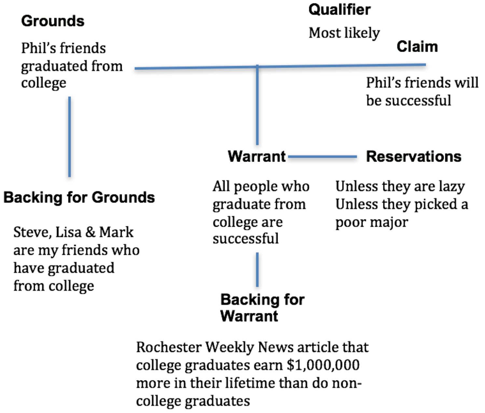

<title>Claims Are Not Evidence: What the Claim Means and Why the Distinction Matters</title>
<meta name="viewport" content="width=device-width, initial-scale=1" />
<style>
      /* Scoped styles for Blogger dark themes. No white table backgrounds. */
      .ep-post {
        color: inherit;
        background: transparent;
        font-family:
          system-ui,
          -apple-system,
          BlinkMacSystemFont,
          "Segoe UI",
          Roboto,
          Helvetica,
          Arial,
          sans-serif;
        line-height: 1.65;
        font-size: 1rem;
        max-width: 980px;
        margin: 0 auto;
      }

      .ep-post * {
        box-sizing: border-box;
      }

      
      .ep-post {
        box-sizing: border-box;
        width: min(100%, 980px);
        padding-left: 1rem;
        padding-right: 1rem;
        overflow-wrap: break-word;
      }

      .ep-post img,
      .ep-post video,
      .ep-post canvas,
      .ep-post svg {
        max-width: 100%;
        height: auto;
      }

      .ep-post figure {
        margin: 1.15em 0;
        max-width: 100%;
      }

      .ep-post .mermaid {
        max-width: 100%;
        overflow-x: auto;
      }

      .ep-post .mermaid svg {
        max-width: 100%;
        height: auto;
      }

.ep-post h1,
      .ep-post h2,
      .ep-post h3,
      .ep-post h4 {
        line-height: 1.25;
        margin: 1.8em 0 0.65em;
        color: inherit;
      }

      .ep-post h1 {
        font-size: 2rem;
        border-bottom: 1px solid
          color-mix(in srgb, currentColor 24%, transparent);
        padding-bottom: 0.35em;
      }

      .ep-post h2 {
        font-size: 1.45rem;
        border-bottom: 1px solid
          color-mix(in srgb, currentColor 16%, transparent);
        padding-bottom: 0.25em;
      }

      .ep-post h3 {
        font-size: 1.15rem;
      }

      .ep-post p {
        margin: 0.75em 0;
      }

      .ep-post ul,
      .ep-post ol {
        margin: 0.65em 0 0.9em 1.35em;
        padding: 0;
      }

      .ep-post li {
        margin: 0.22em 0;
      }

      .ep-post a {
        color: inherit;
        text-decoration: underline;
        text-underline-offset: 0.16em;
      }

      .ep-post strong {
        font-weight: 700;
      }

      .ep-post code {
        background: color-mix(in srgb, currentColor 10%, transparent);
        color: inherit;
        border: 1px solid color-mix(in srgb, currentColor 16%, transparent);
        border-radius: 0.25rem;
        padding: 0.08em 0.28em;
        font-family:
          ui-monospace, SFMono-Regular, Menlo, Consolas, "Liberation Mono",
          monospace;
        font-size: 0.92em;
      }

      .ep-post pre {
        background: color-mix(in srgb, currentColor 7%, transparent);
        color: inherit;
        border: 1px solid color-mix(in srgb, currentColor 18%, transparent);
        border-radius: 0.6rem;
        padding: 1rem;
        overflow-x: auto;
      }

      .ep-post pre code {
        background: transparent;
        border: 0;
        padding: 0;
      }

      .ep-post blockquote {
        margin: 1em 0;
        padding: 0.2em 0 0.2em 1em;
        border-left: 3px solid color-mix(in srgb, currentColor 32%, transparent);
        color: color-mix(in srgb, currentColor 88%, transparent);
      }

      /* =========================================================
   Readable Blogger tables
   ========================================================= */

      .ep-post .table-wrap {
        width: 100%;
        max-width: 100%;
        overflow-x: auto;
        overflow-y: hidden;
        -webkit-overflow-scrolling: touch;
        margin: 1.15em 0;
        border: 1px solid color-mix(in srgb, currentColor 16%, transparent);
        border-radius: 0.65rem;
        background: transparent !important;
      }

      .ep-post table {
        width: 100%;
        border-collapse: collapse;
        table-layout: fixed;
        margin: 1.15em 0;
        font-size: 0.9em;
        line-height: 1.45;
        color: inherit;
        background: transparent !important;
      }

      .ep-post .table-wrap table {
        margin: 0;
      }

      /* Wider tables can scroll, but text still wraps instead of becoming giant. */
      .ep-post table.wide-table {
        min-width: 760px;
      }

      .ep-post table.extra-wide-table {
        min-width: 920px;
      }

      /* Long tables should feel more like a reference sheet. */
      .ep-post table.long-table {
        font-size: 0.86em;
      }

      .ep-post thead,
      .ep-post tbody,
      .ep-post tr,
      .ep-post th,
      .ep-post td {
        background: transparent !important;
        color: inherit;
      }

      .ep-post th,
      .ep-post td {
        border: 1px solid color-mix(in srgb, currentColor 22%, transparent);
        padding: 0.48em 0.6em;
        vertical-align: top;
        white-space: normal;
        overflow-wrap: break-word;
        word-break: normal;
        hyphens: auto;
      }

      .ep-post th {
        font-weight: 700;
        text-align: left;
        background: color-mix(in srgb, currentColor 9%, transparent) !important;
      }

      .ep-post tr:nth-child(even) td {
        background: color-mix(in srgb, currentColor 4%, transparent) !important;
      }

      /* First columns are usually labels/terms. Keep them compact but readable. */
      .ep-post table:not(.extra-wide-table) th:first-child,
      .ep-post table:not(.extra-wide-table) td:first-child {
        width: 22%;
      }

      /* Two-column explanatory tables: give the explanation more room. */
      .ep-post table.two-col th:first-child,
      .ep-post table.two-col td:first-child {
        width: 28%;
      }

      .ep-post table.two-col th:nth-child(2),
      .ep-post table.two-col td:nth-child(2) {
        width: 72%;
      }

      /* Three-column reference tables. */
      .ep-post table.three-col th:first-child,
      .ep-post table.three-col td:first-child {
        width: 22%;
      }

      .ep-post table.three-col th:nth-child(2),
      .ep-post table.three-col td:nth-child(2) {
        width: 43%;
      }

      .ep-post table.three-col th:nth-child(3),
      .ep-post table.three-col td:nth-child(3) {
        width: 35%;
      }

      /* Keep short utility columns compact when manually applied. */
      .ep-post th.short,
      .ep-post td.short,
      .ep-post th.date,
      .ep-post td.date,
      .ep-post th.number,
      .ep-post td.number {
        width: 1%;
        white-space: nowrap;
      }

      /* Use on text-heavy columns when editing by hand later. */
      .ep-post th.long,
      .ep-post td.long,
      .ep-post th.description,
      .ep-post td.description,
      .ep-post th.notes,
      .ep-post td.notes {
        min-width: 14rem;
        line-height: 1.5;
        white-space: normal;
        overflow-wrap: break-word;
      }

      /* Dense option for especially long tables. */
      .ep-post table.dense th,
      .ep-post table.dense td {
        padding: 0.38em 0.5em;
        font-size: 0.96em;
        line-height: 1.42;
      }

      /* Math support */
      .ep-post .mjx-container {
        overflow-x: auto;
        overflow-y: hidden;
        max-width: 100%;
      }

      .ep-post .math-block {
        margin: 1em 0;
        overflow-x: auto;
      }

      @supports not (color: color-mix(in srgb, white 50%, black)) {
        .ep-post h1,
        .ep-post h2 {
          border-bottom-color: rgba(128, 128, 128, 0.35);
        }

        .ep-post th,
        .ep-post td {
          border-color: rgba(128, 128, 128, 0.35);
        }

        .ep-post th {
          background: rgba(128, 128, 128, 0.12) !important;
        }

        .ep-post tr:nth-child(even) td {
          background: rgba(128, 128, 128, 0.06) !important;
        }

        .ep-post code,
        .ep-post pre {
          background: rgba(128, 128, 128, 0.12);
          border-color: rgba(128, 128, 128, 0.25);
        }

        .ep-post .table-wrap {
          border-color: rgba(128, 128, 128, 0.25);
        }
      }

      /* Mobile: convert tables into readable cards instead of squeezed grids. */
      @media (max-width: 720px) {
        .ep-post {
          font-size: 0.98rem;
        }

        .ep-post h1 {
          font-size: 1.65rem;
        }

        .ep-post h2 {
          font-size: 1.28rem;
        }

        .ep-post .table-wrap {
          overflow-x: visible;
          border: 0;
          border-radius: 0;
          margin: 1.1em 0;
        }

        .ep-post table,
        .ep-post table.wide-table,
        .ep-post table.extra-wide-table,
        .ep-post table.long-table {
          display: block;
          width: 100%;
          min-width: 0;
          max-width: 100%;
          font-size: 0.92em;
          border: 0;
        }

        .ep-post thead {
          display: none;
        }

        .ep-post tbody,
        .ep-post tr,
        .ep-post td {
          display: block;
          width: 100% !important;
        }

        .ep-post tr {
          margin: 0 0 0.9em;
          border: 1px solid color-mix(in srgb, currentColor 20%, transparent);
          border-radius: 0.65rem;
          overflow: hidden;
          background: color-mix(
            in srgb,
            currentColor 3%,
            transparent
          ) !important;
        }

        .ep-post td {
          border: 0;
          border-bottom: 1px solid
            color-mix(in srgb, currentColor 14%, transparent);
          padding: 0.55em 0.7em;
          line-height: 1.5;
        }

        .ep-post td:last-child {
          border-bottom: 0;
        }

        .ep-post td::before {
          content: attr(data-label);
          display: block;
          margin-bottom: 0.18em;
          font-size: 0.78em;
          line-height: 1.25;
          font-weight: 700;
          letter-spacing: 0.02em;
          text-transform: uppercase;
          color: color-mix(in srgb, currentColor 72%, transparent);
        }
      }
    

      /* Phase 2 structural hierarchy */
      .ep-post .ep-part-banner {
        margin: 3.2em 0 1.1em;
        padding: 0.9em 1em;
        border-top: 2px solid color-mix(in srgb, currentColor 34%, transparent);
        border-bottom: 1px solid color-mix(in srgb, currentColor 18%, transparent);
        background: color-mix(in srgb, currentColor 4%, transparent);
      }
      .ep-post .ep-part-banner .ep-part-kicker {
        display: block;
        font-size: 0.78em;
        font-weight: 700;
        letter-spacing: 0.08em;
        text-transform: uppercase;
        opacity: 0.72;
        margin-bottom: 0.18em;
      }
      .ep-post .ep-part-banner .ep-part-title {
        display: block;
        margin: 0.08em 0 0.24em;
        padding: 0;
        border: 0;
        font-size: 1.72rem;
        line-height: 1.2;
        font-weight: 750;
      }
      .ep-post h2.ep-source-section {
        margin-top: 2.2em;
        padding-top: 0.35em;
        border-top: 1px solid color-mix(in srgb, currentColor 14%, transparent);
      }
      .ep-post .ep-toc {
        margin: 0.8em 0 2.2em;
      }
      .ep-post .ep-toc-part {
        margin: 1.15em 0;
      }
      .ep-post .ep-toc-part > p {
        margin-bottom: 0.25em;
        font-weight: 700;
      }
      .ep-post .ep-toc-part ul ul {
        margin-top: 0.25em;
        margin-bottom: 0.4em;
      }


      /* =========================================================
         Phase 4: editorial presentation system
         ========================================================= */
      .ep-post .chapter-lead {
        font-size: 1.04em;
        line-height: 1.68;
        margin: 0.9em 0 1.2em;
      }

      .ep-post .concept-callout,
      .ep-post .formula-callout,
      .ep-post .core-claim {
        margin: 1.05em 0;
        padding: 0.78em 0.95em;
        border-left: 4px solid color-mix(in srgb, currentColor 34%, transparent);
        background: color-mix(in srgb, currentColor 5%, transparent);
        border-radius: 0.35rem;
      }

      .ep-post .formula-callout {
        text-align: center;
        font-weight: 650;
        letter-spacing: 0.01em;
      }

      .ep-post ul.compact-grid,
      .ep-post ul.question-grid {
        list-style-position: outside;
        display: grid;
        grid-template-columns: repeat(2, minmax(0, 1fr));
        gap: 0.28em 1.6em;
        margin: 0.8em 0 1.05em 1.25em;
      }

      .ep-post ul.compact-grid li,
      .ep-post ul.question-grid li {
        break-inside: avoid;
        padding-right: 0.4em;
      }

      .ep-post .checkpoint-block,
      .ep-post .learning-insight-block {
        margin: 1.6em 0;
        padding: 0.35em 1em 0.85em;
        border: 1px solid color-mix(in srgb, currentColor 18%, transparent);
        border-radius: 0.7rem;
        background: color-mix(in srgb, currentColor 3%, transparent);
      }

      .ep-post .checkpoint-block > h2,
      .ep-post .checkpoint-block > h3,
      .ep-post .learning-insight-block > h3 {
        margin-top: 0.65em;
      }

      .ep-post table.comparison-table th:first-child,
      .ep-post table.comparison-table td:first-child {
        width: 32%;
      }

      .ep-post table.worksheet-table th:first-child,
      .ep-post table.worksheet-table td:first-child {
        width: 24%;
      }

      .ep-post table.glossary-table th:first-child,
      .ep-post table.glossary-table td:first-child {
        width: 18%;
      }

      .ep-post table.lens-table th:first-child,
      .ep-post table.lens-table td:first-child {
        width: 24%;
      }

      @media (max-width: 720px) {
        .ep-post ul.compact-grid,
        .ep-post ul.question-grid {
          grid-template-columns: 1fr;
          gap: 0.2em;
        }

        .ep-post .concept-callout,
        .ep-post .formula-callout,
        .ep-post .core-claim {
          padding: 0.7em 0.8em;
        }
      }


      /* =========================================================
         Phase 6: section-level coherence and navigation
         ========================================================= */
      .ep-post .chapter-guide {
        margin: 0.8em 0 1.25em;
        padding: 0.72em 0.9em;
        border: 1px solid color-mix(in srgb, currentColor 16%, transparent);
        border-radius: 0.55rem;
        background: color-mix(in srgb, currentColor 2.5%, transparent);
      }
      .ep-post .chapter-guide p {
        margin: 0.18em 0;
      }
      .ep-post .chapter-guide .chapter-path {
        font-size: 0.94em;
        opacity: 0.88;
      }
      .ep-post .chapter-transition {
        margin: 1.45em 0 0.4em;
        padding-top: 0.85em;
        border-top: 1px solid color-mix(in srgb, currentColor 16%, transparent);
        font-style: italic;
      }
      .ep-post .ep-part-banner .ep-part-summary {
        display: block;
        margin-top: 0.42em;
        max-width: 72rem;
        font-size: 0.92em;
        line-height: 1.5;
        font-weight: 400;
        opacity: 0.82;
      }

      .ep-post header.ep-part-banner {
        clear: both;
        position: relative;
      }
      .ep-post .checkpoint-block + header.ep-part-banner {
        margin-top: 3.8em;
      }
</style>
<script>
      window.MathJax = {
        tex: {
          inlineMath: [
            ["\\(", "\\)"],
            ["$", "$"],
          ],
          displayMath: [
            ["\\[", "\\]"],
            ["$$", "$$"],
          ],
          processEscapes: true,
        },
        options: {
          skipHtmlTags: [
            "script",
            "noscript",
            "style",
            "textarea",
            "pre",
            "code",
          ],
        },
      };
    </script>
<script async="" src="https://cdn.jsdelivr.net/npm/mathjax@3/es5/tex-chtml.js"></script>
<article class="ep-post">
<h1>Claims Are Not Evidence: What the Claim Means and Why the Distinction Matters</h1>
<p>When I read the statement <strong>“claims are not evidence”</strong>, it almost seems like a truism. It appears so self-evident that it hardly seems worth analyzing. Yet some people dismiss the statement as “demonstrably” false. The disagreement is worth examining because it turns on several concepts that are easy to collapse into one another: claims, propositions, utterances, information, testimony, and evidence.</p>
<p>The thesis I want to defend is narrower—and more precise—than the slogan can initially sound:</p>
<blockquote>
<p><strong>The mere fact that someone asserts X does not, by itself, justify X. An assertion is not self-authenticating evidence for its own content.</strong></p>
</blockquote>
<p>This formulation matters. A report can sometimes have evidential value, and testimony can certainly be evidence. But when that happens, the evidential force depends on an independently justified relationship between the speaker, the report, the circumstances, and the proposition being asserted. It does not arise merely from the fact that the proposition has been uttered.</p>
<h2>1. Three Things That Should Not Be Conflated</h2>
<p>Before considering examples, it helps to distinguish three objects that are often treated as though they were the same:</p>
<ul>
<li><strong>The proposition:</strong> the content that can be true or false—for example, “John bought a soccer ball.”</li>
<li><strong>The assertion:</strong> John’s utterance of the proposition—for example, “I bought a soccer ball.”</li>
<li><strong>The fact that the assertion occurred:</strong> the observable event that John said those words in a particular context.</li>
</ul>
<p>The proposition does not support itself merely because it has been asserted. However, the fact that someone asserted it may become relevant evidence if we have reasons for thinking that this speaker, in these circumstances, is likely to report the truth. That distinction will become important when we turn to testimony, expert opinion, and Bayesian reasoning.</p>

<h2>2. The Obvious Counterexample: Why We Believe the Soccer-Ball Claim</h2>
<p>Suppose your friend tells you, “I bought a soccer ball.” Either they bought it or they did not. In ordinary circumstances, you will probably believe them without asking for a receipt, a photograph, a bank statement, or eyewitness corroboration. Because people do not normally fabricate trivial purchases for no reason, accepting the report can be perfectly rational. At first glance, this looks like a decisive counterexample to the slogan “claims are not evidence”: surely the fact that your friend said they bought the ball gives you some reason to think they did.</p>
<p>But the reasoning is more complicated than the surface conversation makes it appear. The proposition—<em>my friend bought a soccer ball</em>—is a <a href="https://en.wikipedia.org/wiki/Truth-bearer">truth-bearer</a>: it can be true or false. The utterance “I bought a soccer ball” is the communicative act by which your friend presents that proposition to you. Your acceptance of the proposition is then an inference from the occurrence and circumstances of that utterance. Those three things are connected, but they are not identical.</p>
<p>Why, exactly, do you make the inference? You possess a large body of background knowledge about people, purchases, conversation, and this particular speaker. You assume that soccer balls exist, that your friend is capable of buying one, that the purchase would be unremarkable, that people usually do not invent pointless lies about mundane events, and perhaps that this friend has generally been reliable in the past. You also interpret the remark through <a href="https://en.wikipedia.org/wiki/Commonsense_reasoning">common-sense reasoning</a>, <a href="https://en.wikipedia.org/wiki/Defeasible_reasoning">defeasible generalizations</a>, <a href="https://en.wikipedia.org/wiki/Prior_probability">prior beliefs</a>, and ordinary conversational expectations associated with <a href="https://en.wikipedia.org/wiki/Paul_Grice#Grice's_theory_of_implicature">Gricean principles</a>. In the background are also <a href="https://en.wikipedia.org/wiki/Duhem%E2%80%93Quine_thesis">auxiliary assumptions</a>: unstated propositions that have to be approximately right for the inference to work at all.</p>
<p>Most of this reasoning is suppressed because ordinary conversation would become impossible if every assertion had to be accompanied by a complete evidential dossier. We therefore use <a href="https://en.wikipedia.org/wiki/Heuristic">heuristics</a>. We rely on default expectations until something gives us reason not to. In <a href="https://en.wikipedia.org/wiki/Pragmatics">pragmatic</a> contexts, this is not irrational laziness; it is an efficient response to the fact that everyday communication presupposes an enormous amount of shared knowledge.</p>
<p>That suppressed inferential structure matters. Imagine holding the words fixed while changing the context. Your friend says “I bought a soccer ball,” but you know they have been trying to trick you. Or they are participating in a game where everyone must tell one lie. Or the statement has become relevant to a financial dispute. Or they have repeatedly made false claims about purchases. The sentence is exactly the same, but its evidential force changes because the surrounding warrants have changed. If the bare assertion were self-authenticating evidence for its own content, these contextual differences should not matter. In practice, they matter enormously.</p>
<p>Conversely, suppose your friend produces a dated receipt from a sporting-goods store, a transaction record, or the soccer ball itself. Those items do not merely repeat the proposition. They provide independent routes by which the proposition can be checked. Of course, even those routes can require further assumptions: receipts can be forged, transactions can be misinterpreted, and objects can be borrowed. Evidence is rarely absolute. The point is that each item acquires force through a chain of reasoning that connects it to the proposition.</p>
<p>This lets us state the lesson more precisely. The <strong>content of the assertion</strong> does not justify itself. The <strong>fact that a particular person made the assertion</strong> can become evidentially relevant because we possess independent reasons concerning that person's sincerity, competence, opportunity to know, and the ordinary circumstances of communication. The evidential work is therefore being done by a relationship between source, context, and proposition—not by mere repetition of the proposition.</p>
<p>This is also why it is useful to distinguish propositions from <a href="https://en.wikipedia.org/wiki/Utterance">utterances</a>. Information normally has to be conveyed by some medium, and speech is one such medium. But not every <a href="https://en.wikipedia.org/wiki/Speech_act">speech act</a> is even truth-apt: questions, commands, promises, requests, and expressions of preference perform other functions. When an utterance does express a proposition, the communicative vehicle still should not automatically be identified with the evidential basis for its content.</p>

<h2>3. What Counts as Evidence? Schum, Haack, and Evidential Credentials</h2>
<p>The deeper question underlying the slogan is therefore not simply whether people sometimes rationally believe what other people say. Of course they do. The deeper question is: <strong>what counts as evidence in an inference, and what gives an item its evidential force?</strong></p>
<p>A universally satisfactory formal definition of evidence has eluded philosophers, lawyers, statisticians, and scientists. But one feature is especially important here: evidence is relational. Something is evidence <em>for or against</em> a proposition, hypothesis, or competing set of hypotheses. A datum does not carry a little metaphysical tag saying “evidence” independently of an inferential context. Its role has to be established.</p>
<p>This is the point David Schum emphasizes in <a href="https://nupress.northwestern.edu/9780810118218/the-evidential-foundations-of-probabilistic-reasoning/"><em>The Evidential Foundations of Probabilistic Reasoning</em></a>. Schum distinguishes the mere existence of data from their use as evidence and argues that a datum becomes evidence in a particular inference when its relevance to that inference has been established. On his broader account of a “science of evidence,” evidential assessment repeatedly turns on three major credentials: <strong>relevance, credibility, and inferential force or weight</strong>.</p>
<ul>
<li><strong>Relevance:</strong> Why does this item bear on the hypothesis at all? What chain of reasoning connects the observation to the proposition under examination?</li>
<li><strong>Credibility:</strong> Why should we trust the source, measurement, record, witness, instrument, or process through which the item reached us?</li>
<li><strong>Inferential force:</strong> Given relevance and credibility, how strongly does the item favor one hypothesis over its alternatives?</li>
</ul>
<p>These credentials are analytically distinct. A source can be completely sincere and still report something irrelevant to the hypothesis. An observation can be highly relevant in principle but come from a source of poor credibility. And an item can be both credible and relevant while possessing only weak inferential force because it is almost as likely under a competing hypothesis. This is already enough to show why “someone asserted X” cannot be treated as an evidential primitive. Before the assertion can support X, we have to ask what makes that assertion relevant, how credible its source is, and how much inferential weight it deserves.</p>
<p>Schum's framework is particularly useful because he treats evidence as embedded in <strong>chains and networks of reasoning</strong>. An apparently simple inference often contains upstream credibility questions and downstream relevance questions. If a witness says that a car ran a red light, for example, we can ask whether the witness could see the signal, whether memory or bias may have distorted the report, whether the witness is accurately quoted, and then how strongly the reported observation bears on the hypothesis that the driver violated the signal. The final statement heard in court is therefore the visible endpoint of a much larger evidential structure.</p>
<p>Susan Haack's epistemology reaches a closely related conclusion from a different direction. In <a href="https://www.cambridge.org/core/books/evidence-matters/3E642B4CBD8CD6D2EF5A6A5615324797"><em>Evidence Matters</em></a> and her broader foundherentist account of justification, Haack compares evidential reasoning to solving a crossword puzzle. Experiences function somewhat like clues; background beliefs function like already filled-in intersecting entries. A proposed answer is reasonable not because it has simply been written into the grid, but because of how well it fits the clues and the surrounding entries.</p>
<p>Haack's account highlights three dimensions of evidential quality that are extremely useful here:</p>
<ul>
<li><strong>Supportiveness:</strong> how well the experiences and reasons actually support the belief in question—roughly, how well the proposed answer fits the clue and the intersecting entries.</li>
<li><strong>Independent security:</strong> how well supported those background reasons are <em>independently of the belief currently being evaluated</em>. An argument cannot gain genuine strength merely by letting the conclusion prop up the premises that are supposed to support it.</li>
<li><strong>Comprehensiveness:</strong> how much of the relevant available evidence has been taken into account. A belief may fit a carefully selected subset of the evidence while looking much worse once counterevidence is included.</li>
</ul>
<p>The importance of <strong>independent security</strong> for the present argument is difficult to overstate. If I assert X and then cite my assertion of X as the reason X should be believed, nothing independent has entered the inferential structure. I have simply moved the same content from one grammatical position to another. By contrast, if my report is supported by perception, memory, records, corroboration, expertise, or a reliable measurement process, the belief can receive support from sources whose warrant does not depend upon the conclusion itself.</p>
<p>Haack's crossword metaphor also helps explain why evidence is usually a <strong>mesh</strong> rather than an isolated object. An empirical conclusion is rarely supported by a single naked observation. Experiences, background beliefs, auxiliary assumptions, instrument readings, methods, and other propositions constrain one another. The strength of the conclusion depends not only on whether one item appears to fit, but on how the whole evidential network hangs together and on whether significant contrary evidence has been ignored.</p>
<p>Schum and Haack therefore give us complementary vocabularies. Schum asks us to identify relevance, credibility, inferential force, and the chains that connect evidence to hypotheses. Haack asks whether the proposed belief is actually supported, whether the reasons are independently secure, and whether the relevant evidence is sufficiently comprehensive. Neither framework permits a proposition to bootstrap itself into justification merely by being asserted.</p>
<p>This also clarifies the distinction between <strong>truth</strong> and <strong>justification</strong>. Evidence does not normally make a proposition true. Reality determines whether the proposition is true or false. Evidence supplies reasons for believing, rejecting, or assigning some degree of confidence to the proposition. A claim can therefore be true while unsupported, and it can be supported by apparently good evidence while nevertheless turning out to be false. Evidential status concerns our warrant for believing; truth concerns how things actually are.</p>

<h2>4. Information Is Not Automatically Evidence</h2>
<p>Consider a second example. Suppose your friend says, “Measles are caused by eating too many rotten eggs.” Unlike the soccer-ball report, this is not merely a report of the speaker's own recent action. It is a causal generalization in an empirical domain, and it conflicts with well-established background knowledge. The contrast helps separate <strong>information</strong> from <strong>evidence</strong>.</p>
<p>The sentence unquestionably communicates information in the ordinary sense: it conveys a definite content you did not previously possess. In an <a href="https://en.wikipedia.org/wiki/Entropy_(information_theory)">information-theoretic</a> sense, unexpected messages can even be highly informative because they reduce uncertainty about which message was sent. A surprising assertion may therefore carry a great deal of information while carrying little or no evidential weight for the truth of its content.</p>
<p>This difference matters because information theory and epistemology are answering different questions. Information theory can characterize features of signals, messages, coding, and uncertainty without establishing that the message accurately represents the world. A perfectly transmitted falsehood can be highly informative as a message. Evidence, by contrast, is information whose relationship to a hypothesis has been justified in an inferential context.</p>
<p>That is why surprise is not enough. Your friend's strange causal claim may cause you to reconsider your prior beliefs. It may direct your attention to a neglected possibility. It may even motivate a new experiment. Those are real informational and pragmatic effects. But none of them establishes that rotten eggs cause measles. To become evidence for that causal hypothesis, the information would have to be connected to observations and methods that discriminate the hypothesis from plausible alternatives.</p>
<p>Scientific and statistical reasoning make this dependence especially visible. Raw data do not interpret themselves. Measurements are generated by instruments, sampling procedures, operational definitions, inclusion criteria, coding choices, and background theory. A model then connects those measurements to parameters or hypotheses. If a thermometer reads 39°C, the number becomes evidence about fever only because we possess a theory of temperature, a calibrated measurement process, assumptions about where and how the reading was taken, and a clinical interpretation of what such a temperature means. Remove those connecting assumptions and “39” is merely a symbol.</p>
<p>The same is true in causal inference. Observing that two variables move together does not automatically tell us whether one causes the other. We need a theory of the data-generating process and a method capable of addressing alternative explanations such as confounding, selection effects, reverse causation, measurement error, or chance. The evidential value lies in the relationship established between observation and hypothesis, not in the observation considered in complete isolation.</p>
<p>Schum's terminology helps here. A datum may be credible—it may have been measured accurately—without yet being relevant to the hypothesis. Or it may be relevant but weak, because it is nearly as probable under a rival explanation. Only after we articulate the reasoning that makes it bear on the hypothesis can we assess its <em>inferential force</em>. Haack's terminology makes the same point in another way: we ask whether the datum is genuinely supportive, whether the assumptions linking it to the conclusion are independently secure, and whether we have considered enough of the relevant evidence.</p>
<p>This also explains the familiar distinction between a <strong>report</strong> and the <strong>evidence contained in the report</strong>. A laboratory report might state sample measurements, methods, confidence intervals, diagnostic images, or observations. The document is a communicative vessel. We may colloquially call the whole report “evidence,” but analytically the important question is which observations and inferential relationships inside it support which conclusions. A newspaper article, expert report, database, or witness statement can similarly transmit evidence without every sentence in the container acquiring the same evidential status.</p>
<p>Return now to the rotten-eggs claim. The bare assertion does not establish a statistical regularity, still less a causal mechanism. If your friend adds “because X, Y, and Z,” the analysis changes: X, Y, and Z can be examined for relevance, credibility, and inferential force. Do they consist of controlled observations? Epidemiological data? A plausible biological mechanism? A sample selected in a biased way? Anecdotes? Repetition of the original conclusion? The reasons may be excellent, weak, irrelevant, or circular. But once reasons are offered, we finally have something other than the claim itself to evaluate.</p>
<p>If the alleged support merely restates the proposition in different words, the reasoning risks <a href="https://en.wikipedia.org/wiki/Begging_the_question">begging the question</a>. If one hundred people repeat the proposition, their repetition may be a <a href="https://en.wikipedia.org/wiki/Pointer_(computer_programming)">pointer</a> telling an investigator that the belief is socially widespread or worth examining. It may be evidence about what people believe. But whether it is evidence about measles depends on how those people acquired the belief and whether their reports connect us to independent observations. Repetition can multiply messages without multiplying independent evidential support.</p>

<h2>5. Claims and Testimony Are Not the Same Thing</h2>
<p>At this point the strongest objection should be stated directly: <strong>isn't testimony evidence?</strong> If a witness says, “I saw the accident,” courts and ordinary reasoners may treat that testimony as evidence that the accident occurred. If an expert says that a drug has a particular effect, the expert's testimony may rationally influence what we believe. If testimony consists of claims, does this not show that claims themselves are evidence?</p>
<p>The difficulty comes from sliding between two levels of description. At the level of grammar, testimony is typically expressed through assertions. At the level of epistemic function, however, testimony is not just a sentence with propositional content. It is a <strong>source-mediated evidential relation</strong>: a person represents themselves as reporting something they perceived, remembered, investigated, measured, inferred, or otherwise came to know. The audience is entitled to ask whether that relationship actually exists.</p>
<p>Historically, this is not a minor point. Schum, discussing Ian Hacking's history of evidence, notes that earlier conceptions of evidence placed enormous weight on testimony and authority—on human sources rather than only on physical things. The later development of empirical inquiry expanded the evidential repertoire to include objects, traces, records, measurements, and other signs. The lesson is not that testimony ceased to be evidence. It is that testimony must be understood as one species within a broader ecology of evidential sources.</p>
<p>A <strong>bare claim</strong> can be produced by anyone regardless of access to the truth. I can assert that it rained yesterday in a city I have never visited. A <strong>testimonial report</strong>, by contrast, purports to derive from some epistemically relevant position: I was there, I saw the rain, I measured the rainfall, I remember the event, I inspected the records, or I possess expertise that enables me to interpret the observations. That source-to-fact connection is what creates the possibility of testimonial warrant.</p>
<p>Several distinct questions therefore intervene between “S says P” and “P is probably true”:</p>
<ul>
<li><strong>Opportunity or competence:</strong> Was S in a position to know P?</li>
<li><strong>Perceptual or methodological access:</strong> What observation, memory, record, measurement, or method connected S to the subject matter?</li>
<li><strong>Sincerity:</strong> Is S attempting to report what S actually believes or observed?</li>
<li><strong>Reliability:</strong> How accurate is S under relevant conditions?</li>
<li><strong>Transmission fidelity:</strong> Was the statement heard, recorded, quoted, translated, or summarized accurately?</li>
<li><strong>Independence and corroboration:</strong> Does other evidence provide genuinely independent support, or are multiple reports merely copying the same source?</li>
</ul>
<p>Schum's work on testimonial evidence treats source credibility as part of the inferential structure precisely because the force of testimony changes with these upstream considerations. A highly credible witness can give a report substantial weight; a source with poor opportunity to observe, a motive to deceive, or a record of unreliability deserves less. The words alone do not encode this difference. The difference resides in the evidential credentials of the source and the chain linking the source to the proposition.</p>

<h3>Schum's Decomposition of Testimonial Credibility</h3>

<p>Schum's analysis is especially helpful because it refuses to treat “credibility” as a single mysterious property. For ordinary observational testimony, the route from event to report can be decomposed into stages. Did the witness's senses register the event accurately? Did the witness form a belief from those observations rather than from expectation or wishful thinking? Did the witness then report what they actually believed? These stages correspond to three major credibility attributes in Schum's framework: <strong>observational sensitivity, objectivity, and veracity</strong>.</p>

<ul>
  <li><strong>Observational sensitivity or accuracy:</strong> Were the witness's senses and the conditions of observation good enough to register what happened? Distance, lighting, hearing, obstruction, duration, fatigue, and similar conditions matter here.</li>
  <li><strong>Objectivity:</strong> Did the witness's belief actually arise from the observation, or was perception and interpretation distorted by expectations, desires, assumptions, or other influences?</li>
  <li><strong>Veracity:</strong> Did the witness report what they genuinely believed, or did they intentionally misrepresent it?</li>
</ul>

<p>This decomposition makes the inferential distance between a claim and an event impossible to ignore. The event must first be available to observation; the observation must generate an appropriately grounded belief; the belief must then be transmitted truthfully. Error can enter at every stage. A person may be perfectly honest yet mistaken because the observation was poor. A person may have excellent eyesight yet interpret an ambiguous event through expectation. A person may perceive and understand the event correctly and then lie about it. The final sentence “E occurred” is therefore not evidentially equivalent to E itself.</p>

<p>The basis of a testimonial assertion matters as well. A report based on personal observation has a different evidential structure from a second-hand report, and both differ from an opinion or inference. With each additional source or inferential stage, new credibility and relevance questions appear. This is why “someone said P” is only the beginning of testimonial analysis, not its conclusion.</p>
<p>This is also why testimony can be described as an <strong>evidential surrogate</strong>. The hearer was not present at the accident, did not perform the experiment, or cannot personally inspect every relevant record. The witness or expert stands between the hearer and the underlying observations. Rational reliance on testimony is therefore possible without treating language as magical. We are relying on a person as a transmission channel whose credibility and access to the relevant facts can themselves be evaluated.</p>
<p>Haack's idea of independent security helps sharpen the point. If a witness's report is credible only because we already assume the conclusion is true, nothing has been gained. But if the witness's reliability, opportunity to observe, and consistency with other evidence can be supported independently of the proposition at issue, the testimony can contribute genuine warrant. Testimony is therefore compatible with the thesis that assertions are not self-authenticating.</p>
<h3>Argument from Expert Opinion</h3>
<p>Expert testimony makes the distinction even clearer. We do not rationally accept a proposition merely because an expert-shaped person says it. Expertise matters because it is supposed to indicate a structured route to knowledge: specialized training, experience, methods, access to evidence, peer scrutiny, and the capacity to answer critical questions. For pragmatic reasons, an audience may not reconstruct the entire evidential chain, but that chain is what gives the expert conclusion its rational authority.</p>
<p>Douglas Walton's <a href="https://scholar.uwindsor.ca/cgi/viewcontent.cgi?article=1003&amp;context=crrarpub">scheme for argument from expert opinion</a> makes the structure explicit:</p>
<ul>
<li><strong>Major Premise:</strong> Source E is an expert in subject domain S containing proposition A.</li>
<li><strong>Minor Premise:</strong> E asserts that proposition A is true (or false).</li>
<li><strong>Conclusion:</strong> A is true (or false).</li>
</ul>
<p>Notice what the scheme does <em>not</em> say. It does not infer A from A. The proposition “E asserts A” is a different proposition from A, and its relevance depends on the major premise about E's expertise. Even then, the inference is defeasible rather than deductively guaranteed. The expert may be outside the relevant specialty, may have misunderstood the evidence, may be biased, may be misquoted, or may hold a minority view unsupported by adequate evidence.</p>
<p>Walton's critical questions probe those warrants and are especially useful in adversarial settings such as <a href="https://en.wikipedia.org/wiki/Cross-examination">cross-examination</a>:</p>
<ol>
<li><strong>Expertise Question:</strong> How credible is E as an expert source?<br/>1.1 What is E's name, job or official capacity, location, and employer?<br/>1.2 What degrees, professional qualifications or certification by licensing agencies does E hold?<br/>1.3 Can testimony of peer experts in the same field be given to support E's competence?<br/>1.4 What is E's record of experience, or other indications of practiced skill in S?<br/>1.5 What is E's record of peer-reviewed publications or contributions to knowledge in S?</li>
<li><strong>Field Question:</strong> Is E an expert in the field that A is in?<br/>2.1 Is the field of expertise cited in the appeal a genuine area of knowledge, or area of technical skill that supports a claim to knowledge?<br/>2.2 If E is an expert in a field closely related to the field cited in the appeal, how close is the relationship between the expertise in the two fields?<br/>2.3 Is the issue one where expert knowledge in any field is directly relevant to deciding the issue?<br/>2.4 Is the field of expertise cited an area where there are changes in techniques or rapid developments in new knowledge, and if so, is the expert up-to-date in these developments?</li>
<li><strong>Opinion Question:</strong> What did E assert that implies A?<br/>3.1 Was E quoted in asserting A? Was a reference to the source of the quote given, and can it be verified that E actually said A?<br/>3.2 If E did not say A exactly, then what did E assert, and how was A inferred?<br/>3.3 If the inference to A was based on more than one premise, could one premise have come from E and the other from a different expert? If so, is there evidence of disagreement between what the two experts separately asserted?<br/>3.4 Is what E asserted clear? If not, was the process of interpretation justified? Are other interpretations plausible? Could important qualifications have been left out?</li>
<li><strong>Trustworthiness Question:</strong> Is E personally reliable as a source?<br/>4.1 Is E biased?<br/>4.2 Is E honest?<br/>4.3 Is E conscientious?</li>
<li><strong>Consistency Question:</strong> Is A consistent with what other experts assert?<br/>5.1 Does A have general acceptance in S?<br/>5.2 If not, can E explain why not and give reasons why there is good evidence for A?</li>
<li><strong>Backup Evidence Question:</strong> Is E's assertion based on evidence?<br/>6.1 What is the internal evidence the expert used to arrive at this opinion as a conclusion?<br/>6.2 If there is external evidence, such as physical evidence reported independently of the expert, can the expert deal with it adequately?<br/>6.3 Can it be shown that the opinion given is not scientifically unverifiable?</li>
</ol>
<p>The final question is particularly revealing for the thesis of this essay. If “the expert says A” were enough by itself, there would be no need to ask what evidence the expert used. Walton's scheme instead treats the assertion as part of an argument whose rational force depends on expertise, relevance, trustworthiness, consistency, and backup evidence. Expert testimony can therefore be evidence while the conclusion asserted by the expert remains something that requires an evidential basis.</p>
<h2>6. Being “In a Position to Know” Is Domain-Specific</h2>
<p>Testimony can be very weak evidence in some circumstances and decisive evidence in others because a witness is supposed to have been in a position to observe something relevant. A person testifying uses a locutionary act to report or express a perception. What ultimately needs validation is the perceptual and memorial connection to the event. If the speaker was not in a position to know, the assertion loses that testimonial warrant.</p>
<p>In legal settings, assertions from someone without the relevant first-hand connection may become <a href="https://en.wikipedia.org/wiki/Hearsay">hearsay</a> and can be treated as <a href="https://en.wikipedia.org/wiki/Admissible_evidence">inadmissible</a>, subject of course to the rules and exceptions governing the jurisdiction. The broader point is that not every type of claim can be supported by the same kind of testimony.</p>
<p>For example, testimony may help establish whether a particular event occurred when physical or trace evidence is unavailable. But testimony alone is generally not an adequate method for establishing a causal generalization about the observable world, where <a href="https://en.wikipedia.org/wiki/Scientific_evidence">scientific evidence</a> is required. The same problem appears in diagnosis, generalization, prediction, evaluation, and other domains where specialized methods connect observations to conclusions.</p>
<p>Consider someone saying, “I have clinical depression.” They are obviously in a privileged position to report their own experiences, feelings, symptoms, and history. But being in a position to know those experiences is not identical to being in a position to establish a clinical diagnosis. The diagnostic conclusion requires appropriate criteria and a method of evaluation.</p>
<p>A general argument from position to know can be represented as follows:</p>
<ul>
<li><strong>Major Premise:</strong> Source s is in a position to know about things in a subject domain f containing proposition p.</li>
<li><strong>Minor Premise:</strong> s asserts that p is true (or false).</li>
<li><strong>Conclusion:</strong> p is true (or false).</li>
<li><strong>CQ1:</strong> Is s in a position to know whether p is true (or false)?</li>
<li><strong>CQ2:</strong> Is s an honest, trustworthy, and reliable source?</li>
<li><strong>CQ3:</strong> Did s actually assert that p is true (or false)?</li>
</ul>
<p>The phrase “in a position to know” therefore has to be indexed to the proposition at issue. Someone can be in a position to know that they feel persistent sadness, but not necessarily whether the relevant observations satisfy a clinical diagnostic standard. A clinician’s assessment is an argument from authority grounded in credentials, observable evidence, and diagnostic criteria—the method used to distinguish competing explanations. A second clinician might provide <a href="https://en.wikipedia.org/wiki/Corroborating_evidence">corroboration</a> through an alternative but robust diagnostic method.</p>

<h2>7. Toulmin's Model Makes the Distinction Explicit</h2>
<p>I first encountered a simple version of this distinction in a university debate course. A “claim” was the thing that had to be defended. There are claims of fact, claims of value, claims of policy, claims of cause and effect, and many other types. Their contents differ, but their argumentative role is the same: <strong>the claim is what the advocate is trying to establish</strong>. It is not, merely by occupying that role, the material that establishes itself.</p>
<p>The <strong>Toulmin model of argumentation</strong> is especially useful because it decomposes an argument into functional parts. Instead of treating an argument as an undifferentiated collection of sentences, it asks what each component is doing. That functional separation makes the confusion between claims and evidence much easier to see.</p>
<div class="separator" style="clear: both; text-align: center">
<a href="img/claims.png" style="margin-left: 1em; margin-right: 1em"></a>
</div>
<ul>
<li><strong>Claim:</strong> The conclusion or thesis the argument asks the audience to accept. In the sample argument, the claim is that “Phil's friends will lead successful lives.”</li>
<li><strong>Grounds:</strong> The observations, data, facts, records, or other starting points offered in support of the claim. In the sample, the grounds are that “Phil has several friends who have graduated from college.”</li>
<li><strong>Warrant:</strong> The general principle or inferential bridge that licenses movement from the grounds to the claim. In the sample, a crude warrant might be “People who graduate from college are likely to be successful.”</li>
<li><strong>Backing:</strong> Support for the warrant—or, in an expanded use, support for the reliability of the grounds themselves. Statistical studies about outcomes for graduates might back the warrant; records identifying which friends actually graduated might back the grounds.</li>
<li><strong>Qualifier:</strong> A statement of how strongly the grounds and warrant justify the claim: “probably,” “most likely,” “in most cases,” and so forth.</li>
<li><strong>Reservation or Rebuttal:</strong> Conditions under which the warrant may fail or the claim may not follow even though the grounds are true.</li>
</ul>
<p>The distinction is not merely terminological. Consider what happens if we try to use the claim as its own grounds:</p>
<blockquote>
<p><strong>Grounds:</strong> P</p>
<p><strong>Warrant:</strong> P &rArr; P</p>
<p><strong>Claim:</strong> P</p>
</blockquote>
<p>Nothing has been learned. The structure is formally valid in the trivial sense that P implies itself, but it provides no independent reason for someone who does not already accept P. Argumentation is needed precisely because the audience is not yet entitled to treat the claim as established. The grounds must therefore supply something epistemically prior to the conclusion, and the warrant must explain why those grounds bear on it.</p>
<p>This also helps explain why a <strong>sentence</strong> can change argumentative roles over time without becoming self-justifying. Suppose a study establishes proposition G. In a later argument, G may be used as a ground for some new claim C. G is then evidence in the later argument because it has already acquired support through an earlier evidential chain. It is not evidence merely because it is syntactically a declarative sentence. Its role and credentials have changed.</p>
<p>Toulmin's distinction between grounds and warrants is equally important. A pile of observations does not automatically support a conclusion. We need some principle explaining why those observations matter. If a defendant's fingerprints are found on an object, the observation becomes relevant to a hypothesis only through warrants about how fingerprints are deposited, how they were collected, whether contamination is plausible, and what alternative explanations remain. The warrant is the bridge between <em>what was observed</em> and <em>what we are entitled to infer</em>.</p>
<p>Backing then prevents the warrant from becoming another unsupported assertion. Why believe the warrant? Perhaps because of validated scientific knowledge, legal doctrine, repeated experience, statistical data, or some other body of support. Reservations and qualifiers prevent us from pretending that defeasible reasoning is deductively certain. Toulmin's model therefore exposes a layered architecture: claim, evidence, connection, support for the connection, exceptions, and degree of confidence.</p>
<p>That architecture is almost the mirror image of the statement “the claim is its own evidence.” The model exists because good argument requires us to keep the <strong>thing to be established</strong> distinct from the <strong>materials that establish it</strong> and from the <strong>rule that explains why those materials matter</strong>.</p>

<h2>8. Mathematics: A Claim Is Not Its Own Proof</h2>
<p>Mathematics does not tell us what empirical evidence is, so the following discussion is a structural analogy rather than a definition of evidence. But mathematics makes one feature of “claims” unusually stark: <strong>asserting a mathematical proposition does absolutely nothing, by itself, to prove the proposition.</strong></p>
<p>The lexicon of <a href="https://en.wikipedia.org/wiki/Mathematical_proof">mathematical proof</a> does not always sharply distinguish “claim” from “proposition.” The important distinctions concern the role a statement plays within a proof: theorem, lemma, proposition, claim, corollary, assumption, definition, and so forth. The <a href="https://mathcomm.org/courses/18-100cfall2009/100cf09-tutorial-9/">Mathematical Association of America</a> and introductions to <a href="https://www.birmingham.ac.uk/Documents/college-eps/college/stem/Student-Summer-Education-Internships/Proof-and-Reasoning.pdf">proof and mathematical reasoning</a> use these labels to organize inferential work.</p>
<p>Consider the following examples:</p>
<ul>
<li><strong>Proposition:</strong> The harmonic series \(\sum_{n=1}^{\infty} 1/n\) diverges.</li>
<li><strong>Lemma:</strong> Under specified conditions, divergence of an associated integral implies divergence of the corresponding series.</li>
<li><strong>Claim:</strong> \(\lim_{x\to\infty}\int_1^x 1/t\,dt\) diverges.</li>
<li><strong>Theorem:</strong> The p-series \(\sum 1/n^p\) converges for \(p&gt;1\) and diverges for \(p\le 1\).</li>
<li><strong>Corollary:</strong> \(\sum 1/n^2\) converges.</li>
</ul>
<p>Calling the third line a “claim” does not grant it any privilege. A mathematician can write “We claim that the integral diverges,” but the next intellectual obligation is precisely to show why. The phrase announces a proposition whose proof is forthcoming. If the author simply wrote the same sentence again—“the integral diverges because the integral diverges”—the proof would not have advanced by a single step.</p>
<p>Mathematical justification comes instead from premises and rules of inference whose use is licensed within the relevant system. A proof may rely on definitions, previously proved theorems, axioms, algebraic transformations, induction, contradiction, or other accepted inferential rules. The conclusion is justified because there is a valid path from the premises to the proposition. The proposition does not supply that path merely by being written down.</p>
<p>This is easiest to see with a disputed proposition. Suppose two mathematicians disagree about whether P is true. One of them says “P.” Nothing about the disagreement has changed. If ten mathematicians chant “P,” the proof has still not advanced. Even unanimous belief among mathematicians is conceptually distinct from a proof of P. Consensus may be sociologically interesting and may give a nonexpert pragmatic reasons to trust that a proof probably exists, but within mathematics the theorem is established by demonstration, not by the number or confidence of people asserting it.</p>
<p>Axioms do not undermine this point. An axiom is not a theorem that became true because someone confidently asserted it. It is a proposition adopted as a starting point within a formal system. Once the axioms and inference rules are fixed, claims and theorems are derived from them. Change the axioms and one may change what is derivable. The justificatory structure therefore remains explicit: some statements are stipulated as starting assumptions; others must be demonstrated from those assumptions. A claim does not silently convert itself into an axiom simply by being called a claim.</p>
<p>Nor does proof make a mathematical proposition true in the causal sense. Rather, proof establishes that the proposition follows from the accepted premises and rules. This parallels the earlier distinction between truth and justification. In empirical reasoning, evidence does not manufacture reality; it justifies belief about reality. In mathematics, the proof supplies the warrant for accepting the proposition within the relevant framework.</p>
<p>Once a proposition has been proved, it can of course be used as a premise in later reasoning. A lemma proved on page 5 may support a theorem on page 20. But notice the direction of explanation: the lemma can support the later theorem because its own justificatory burden has already been discharged. It did not become usable merely because it was once introduced with the words “we claim.”</p>
<p>This is why the mathematical analogy drives the central point home so cleanly. A claim is a candidate conclusion. A proof is the structure that licenses acceptance of that conclusion. Conflating the two would erase the very distinction that makes proof possible. In empirical reasoning the relevant support is not normally deductive proof, but the same structural principle remains: <strong>the proposition under dispute cannot do all of the justificatory work required to settle its own dispute.</strong></p>
<p>Of course, ordinary life often requires us to accept claims without personally reconstructing their proofs or evidence. We rely on <a href="http://jmc.stanford.edu/articles/commonsense.html">common sense</a>, <a href="https://en.wikipedia.org/wiki/Case-based_reasoning">case-based reasoning</a>, expertise, testimony, and useful <a href="https://en.wikipedia.org/wiki/Duck_test">heuristics</a>. That is compatible with the distinction. Pragmatic acceptance tells us what it may be rational to believe given limited time and access; it does not turn an unsupported proposition into its own justification. <strong>With regard to empirical reasoning, claims carry an <a href="https://en.wikipedia.org/wiki/Evidential_burden">evidential burden</a>.</strong></p>

<h2>9. Bayes' Theorem Does Not Supply the Evidential Bridge</h2>
<p>One final source of confusion is the appeal to Bayes' theorem as though it automatically converts any observation into evidence for any chosen hypothesis. Bayes' theorem is enormously important, but it is a rule for relating conditional probabilities. It does not, by itself, provide the substantive theory that tells us why an observation should be expected under one hypothesis more than another.</p>
<div class="math-block">
  \[
    P(H\mid E)=\frac{P(E\mid H)P(H)}{P(E)}
  \]
</div>
<p>In odds form, the structure is even more revealing:</p>
<div class="math-block">
  \[
    \frac{P(H\mid E)}{P(\neg H\mid E)}
    =
    \frac{P(H)}{P(\neg H)}
    \times
    \frac{P(E\mid H)}{P(E\mid \neg H)}.
  \]
</div>
<p>The last term is the likelihood ratio. It tells us how much more expected the observation E is if H is true than if H is false. If the ratio is greater than one, E favors H over the alternative; if it is near one, E has little discriminatory force; if it is below one, E favors the alternative. This is close to Schum's notion of <strong>inferential force</strong>. But Bayes' theorem does not fill in those likelihoods for us. The hard epistemic work is hidden inside them.</p>
<p>Where do \(P(E\mid H)\) and \(P(E\mid\neg H)\) come from? Sometimes from repeated empirical frequencies, sometimes from a validated measurement model, sometimes from a causal theory, sometimes from expert judgment, and often from a combination of these. In every case we need a substantive account of the <strong>data-generating process</strong>: if H were true, why should we expect to observe E? If H were false, what alternative processes could also generate E? How reliable is the observation process? What selection mechanisms, confounders, dependencies, or measurement errors intervene?</p>
<p>This is exactly where theory enters. Observations do not float freely into hypotheses. A medical test result supports a diagnosis because there is biomedical knowledge about the disease process and empirical knowledge about the test's sensitivity, specificity, calibration, and error characteristics. A spectral line supports a claim about chemical composition because physical theory connects atomic structure to observed spectra. A macroeconomic statistic bears on recession because economic definitions, measurement procedures, and models connect observed production, employment, income, and spending to the latent state we are trying to characterize.</p>
<p>Without such a bridge, writing a conditional probability is merely notation. We could write \(P(\text{recession}\mid\text{red shoes observed})\), but unless we can justify why red shoes should occur at different rates in recessions and non-recessions, the observation has no demonstrated relevance. Bayes gives us the arithmetic of updating <em>once the probabilistic relationship has been specified</em>; it does not manufacture the relationship.</p>
<p>Now suppose the hypothesis is <em>H</em>: “the economy is in a recession,” and the observation is <em>E</em>: “100 people on social media independently assert that the economy is in a recession.” It is too strong to say that the assertion-event can never be evidence. If people are genuinely more likely to make those assertions during recessions than otherwise, then \(P(E\mid H)\) may exceed \(P(E\mid\neg H)\), and the observation can rationally shift a posterior probability.</p>
<p>But notice what has happened. We have not shown that “claims are evidence because Bayes says so.” We have introduced an empirical theory about how <strong>claims are generated</strong>. Perhaps people observe layoffs, falling sales, unemployment, or news reports. Perhaps they understand the economic indicators. Perhaps they copy one viral post. Perhaps they are reacting to partisan rhetoric. Perhaps automated accounts repeat the same message. Each mechanism implies different likelihoods, and therefore different evidential force.</p>
<p>Independence is especially important. One hundred apparently separate claims do not provide one hundred independent pieces of support if ninety-nine of them derive from the same original source. A Bayesian model that treats correlated reports as independent will double-count evidence and produce an exaggerated posterior shift. Schum's work on recurrent combinations of evidence, redundancy, and inferential structure is directly relevant here: the way evidence is connected affects its weight.</p>
<p>We must also distinguish hypotheses. One hundred recession claims may be strong evidence for the hypothesis <em>many people believe the economy is in recession</em>. They may be useful evidence about consumer sentiment. But the hypothesis <em>the economic system satisfies the relevant conditions for recession</em> is different. Moving from public sentiment to the underlying state of the system requires a theory linking sentiment to that state. The same observation can therefore be highly relevant to one hypothesis and weakly relevant to another.</p>
<p>This is the Bayesian version of Schum's relevance requirement and Haack's supportiveness requirement. Before an observation can update a hypothesis in an epistemically meaningful way, we need reasons for assigning the likelihoods we use. Those reasons may themselves depend on background evidence, models, measurements, and auxiliary assumptions. Haack's independent-security requirement then asks whether those background reasons have support that does not simply depend on the hypothesis we are trying to establish.</p>
<p>Theory is therefore not an optional decoration placed on top of “raw evidence.” Theory, broadly understood, is often what tells us <em>what the observation is an observation of</em>, how it was generated, what alternatives could produce it, and why it discriminates among hypotheses. Data constrain theory, but theory is also needed to interpret data. This does not mean that any theory can manufacture evidence at will; the theory itself must be independently supported, empirically adequate, and open to correction.</p>
<p>So simply writing \(P(H=\text{Recession}\mid E=\text{100 claims})\) settles nothing. It names a conditional probability while leaving the central evidential question unanswered: <strong>what justifies the likelihood relationship between those assertions and the state of the economy?</strong> If the claims are generated by processes largely independent of the true economic state, their likelihood ratio will be close to one and they will add little. If they arise from reliable, partly independent observations of recession-sensitive conditions, they may carry more weight. Either way, their evidential force is a consequence of the justified model connecting observation to hypothesis—not of assertion as such.</p>

<h2>10. Conclusion: Claims Do Not Authenticate Themselves</h2>
<p>The slogan “claims are not evidence” is easiest to misunderstand when it is treated as the absolute statement that reports, testimony, or assertions can never participate in evidential reasoning. That would be too crude. Assertions can report evidence, transmit evidence, direct us toward evidence, and—when the source relationship is appropriately warranted—function as testimonial evidence.</p>
<p>The more careful principle is this: <strong>a proposition does not acquire justification merely because somebody asserts it.</strong> An assertion does not authenticate its own content. When the fact that an assertion occurred becomes evidentially relevant, that relevance depends on additional facts and warrants: opportunity to know, reliability, expertise, perception, memory, methods, measurements, corroboration, background knowledge, or a justified probabilistic relationship between the report and the proposition.</p>
<p>The soccer-ball example shows why everyday acceptance of testimony can be rational without making propositions self-validating: an enormous network of ordinary assumptions connects the speaker's report to the event. Schum's analysis makes that network explicit in terms of relevance, credibility, inferential force, and chains of reasoning. Haack's foundherentism adds the requirements of supportiveness, independent security, and comprehensiveness. Together, they explain why evidential status is earned through relationships, not bestowed by grammar.</p>
<p>The rotten-eggs example shows that information and evidence are not interchangeable. A message can be surprising, informative, memorable, or socially widespread without bearing strongly on the truth of its content. Testimony shows that assertions can acquire evidential force when a credible source stands in an appropriate relation to the facts. Expert opinion makes the hidden warrants even more visible because expertise, field relevance, trustworthiness, and backup evidence must all be examined.</p>
<p>Toulmin's model formalizes the distinction at the level of argument: the claim is what must be established; the grounds are what we start from; the warrant explains why the grounds support the claim; backing supports the warrant; qualifiers express degree; and rebuttals identify exceptions. Mathematics provides the limiting case: writing “we claim P” is an announcement of a proof obligation, not the discharge of one. Once P is proved it may support later reasoning, but only because its own burden has been met.</p>
<p>Bayesian reasoning reaches the same conclusion in probabilistic form. An observation supports a hypothesis only insofar as a justified model makes the observation more expected under that hypothesis than under relevant alternatives. Bayes' theorem performs the update; it does not supply the substantive theory, measurement model, credibility assessment, independence assumptions, or causal story that justify the likelihoods.</p>
<p>Across ordinary conversation, scientific inference, expert testimony, argumentation theory, mathematics, and Bayesian analysis, the same structure keeps reappearing: <strong>there must be some warranted bridge between what is presented and what is concluded.</strong> A claim can stand at one end of that bridge. It cannot become the bridge merely by being repeated.</p>
</article>
